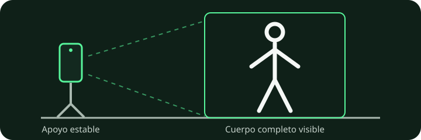

Cada rep cuenta.
CaliReps AI usa visión por computadora para analizar tus ejercicios de calistenia directamente desde el navegador: conteo provisional, recorrido, velocidad angular, tempo y feedback de técnica.
Las métricas son estimaciones de una imagen 2D. La pérdida de velocidad es una referencia de la serie y no una medición de fatiga fisiológica.
Entrena. Analiza. Mejora.
CaliReps AI convierte la cámara de tu teléfono en una herramienta de análisis de movimiento para calistenia.
Elige tu ejercicio
Selecciona el movimiento que quieres entrenar y coloca el teléfono de forma que se vea el cuerpo completo.
Entrena con cámara o video
Analiza tu serie en tiempo real o carga un video ya grabado.
Recibe métricas y feedback
Revisa reps válidas, ROM, velocidad, tempo, fatiga y correcciones de técnica.
Más que un contador de reps.
La meta es ayudarte a entender la calidad de la serie, no solo el número final.
ROM
Estimación del rango de movimiento de cada repetición.
Velocidad
Velocidad angular estimada para comparar reps dentro de una misma serie.
Tempo
Tiempo aproximado de bajada y subida para visualizar tu ritmo.
Pérdida de velocidad
Comparación aproximada con tus primeras reps. La app la etiqueta como «fatiga»; no mide fatiga fisiológica.
Diseñado específicamente para movimientos de calistenia.
| Ejercicio | Conteo / hold | Feedback | Métricas |
|---|---|---|---|
| Push-ups | Reps | Extensión, profundidad, alineación | ROM, velocidad, tempo, fatiga |
| Fondos | Reps | Apoyo, extensión y profundidad | ROM, velocidad, tempo, fatiga |
| Pull-ups | Reps | Extensión y altura | ROM, velocidad, tempo, fatiga |
| Squats | Reps | Extensión y profundidad | ROM, velocidad, tempo, fatiga |
| Muscle-up | Reps | Suspensión, transición y apoyo | Recorrido, velocidad, consistencia |
| Front lever | Créditos por bloques de hold | Horizontalidad y extensión | Tiempo estimado, estabilidad |
| Handstand | Créditos por bloques de hold | Inversión, extensión y alineación | Tiempo estimado, estabilidad |
| Handstand push-up | Reps | Extensión y profundidad invertida | ROM, velocidad, tempo, fatiga |
| One arm pull-up | Reps | Extensión unilateral y altura | ROM, velocidad, fatiga |
| Desplantes atrás | Reps | Paso, flexión y regreso | ROM, tempo, velocidad |
| Burpees | Reps | Secuencia completa y salto | Tiempo de ciclo, velocidad, fatiga |
| Box jump | Reps | Despegue, apoyo y extensión | Tiempo, consistencia |
| Squat box jump | Reps | Profundidad, salto y extensión | ROM, tiempo, consistencia |
| Pistol squat | Reps | Apoyo unilateral y profundidad | ROM, velocidad, tempo, fatiga |
Privacidad primero
El análisis de cámara y video ocurre en tu dispositivo. CaliReps AI no necesita subir tus videos a un servidor para analizarlos.
Funciona en el navegador
Abre la web desde tu teléfono y empieza. Sin instalación obligatoria para el MVP.
MVP en evolución
Estamos perfeccionando la validación ejercicio por ejercicio con pruebas reales y feedback de usuarios.
El encuadre también cuenta.
Coloca el teléfono en un apoyo estable, con luz suficiente y espacio para mostrar el movimiento completo. Un brazo o una pierna fuera de cuadro puede interrumpir el conteo.

Revisa los resultados antes de interpretarlos. El conteo y las métricas pueden fallar por perspectiva, iluminación u oclusiones. No sustituyen una evaluación médica, fisioterapéutica o biomecánica profesional.
Calistenia, datos y un proyecto en evolución.
CaliReps AI es un proyecto independiente de calistenia y visión por computadora. Desarrollamos una herramienta de análisis en el navegador y guías para comprender sus resultados y limitaciones.
Tu feedback mejora el juez.
CaliReps AI está en etapa MVP. Si una REP, NO REP o métrica no coincide con lo que realmente hiciste, cuéntanoslo. Estas respuestas nos ayudan a priorizar las correcciones que más afectan a usuarios reales.
Conteo
Dinos cuántas reps reales hubo y cuántas detectó CaliReps AI.
NO REPs
Reporta falsos NO REP o intentos que el sistema contó cuando no debía.
Métricas y UX
Cuéntanos si ROM, tempo, velocidad, fatiga o la interfaz te resultaron útiles y claros.
Pon a prueba tus reps.
Abre CaliReps AI desde el teléfono, elige un ejercicio y empieza una serie.